Lose the kilos.
And keep them off.
Not a diet. And definitely not one of Marten's witchcraft green power-juices. 😅 This is how you lose weight the healthy way and actually keep it off: a shift in mindset, a few simple systems, little tricks and easy tips you will really stick to. Real Basque food, no starving, and learning to smile at a craving instead of obeying it. Because in the end it was never about short-term kilos, it was about your WHY, your systems, and the long life you want from here.
Perded los kilos.
Y que no vuelvan.
Esto no es una dieta. Y desde luego no es uno de los zumos verdes de brujería de Marten. 😅 Así es como se adelgaza de forma sana y se mantiene de verdad: un cambio de mentalidad, unos cuantos sistemas sencillos, pequeños trucos y consejos fáciles que de verdad vais a mantener. Comida vasca de verdad, sin pasar hambre, y aprender a sonreírle a un antojo en vez de obedecerlo. Porque al final nunca fue cuestión de kilos para un verano, fue cuestión de vuestro PORQUÉ, vuestros sistemas y la vida larga que queréis a partir de ahora.
You have tried before. I get it.
In a minute I will tell you a little story about a whisky cheesecake in a Chinese restaurant, and five words in Spanish you will be itching to use, the kind you would not say in front of the foreman. 😄 But before that story, something important.
Hey Guillermo and Pilar. I know exactly what you are probably thinking right now: "Madre mía, this is a lot of reading. I just want the solution, the quick fix. I don't want to study a whole book." Fair enough.
So here is how easy I make it: you do not even have to read it. Your hands have lifted enough today. For once, let your ears do the work. Press play and let a real Spanish voice read the whole thing to you, out loud. Take your time, brick by brick. Best of all on the sofa next to Pilar (your partner in crime, and the cook who keeps you fed like a king, which is exactly why this is a team sport 😄), half an hour at most. That is all it takes.
And Pilar, this is every bit as much for you. You are the heart of this kitchen, a true maestra of Spanish and Basque cooking, making sure your man never sits down to a cold plate after a hard day. That is love. It also makes you two a team, because Guillermo can be strong as an ox all day, then walk in, see your famous ali-oli smiling up at him at 800 calories a spoon, and the whole fight starts over. 😄 (More on taming that mayonnaise in the extra tips.)
Probably you have tried to lose weight before. Probably more than once. Maybe you held on for a few days, a few weeks, even a few months, lost a couple of kilos and felt great, and then life got busy and the old habits crept back in. Sometimes it is simply hard to stick to the rules.
And maybe you are still not happy with where you are. That is exactly why this guide exists. You are not starting over, you are starting wiser.
So, that is why the real question is this:
"Will you give 25 minutes, just once, to change how you live for the next 30 years?" 🔥
This is not about following yet another strict food system with a long list of rules you can barely wait to escape. You know the scene: late at night, comfy on the sofa, watching your favourite show and staring down your favourite sweet like it owes you money, your brain working overtime to build the perfect legal case for why you simply have to eat it tonight. 😄
Because that is the trap: you grit your teeth, you drop a few kilos, you go back to the old way, you gain it all back, and round and round you go. Lose, gain, lose, gain. Exhausting, and it never ends.
I am not putting you through that. I am after something completely different: the moment it clicks. When you finally understand why, a switch flips inside you and it stays flipped. Not a diet you survive. A person you become.
This is the difference between losing weight for one summer, and changing for the rest of your life.
So let me show you where it really starts, with the captain of your ship. 🚢
Ya lo habéis intentado antes. Lo entiendo.
Dentro de un momento os contaré una pequeña historia sobre una tarta de queso al whisky en un restaurante chino, y cinco palabras que os vais a morir de ganas de usar, de esas que no se dicen delante del capataz. 😄 Pero antes de esa historia, algo importante.
Hola Guillermo y Pilar. Sé perfectamente lo que estaréis pensando ahora mismo: «Madre mía, cuánto para leer. Yo solo quiero la solución, el remedio rápido. No me apetece estudiarme un libro entero». Me parece justo.
Así que mirad qué fácil os lo pongo: ni siquiera tenéis que leerlo. Las manos ya han levantado bastante por hoy. Por una vez, que trabajen los oídos. Dadle al play y dejad que una voz española de verdad os lo lea todo, en voz alta. Con calma, ladrillo a ladrillo. Mejor aún en el sofá, al lado de Pilar (tu cómplice, y la cocinera que te tiene como a un rey, que es justo por lo que esto es deporte de equipo 😄), media hora como mucho. Eso es todo lo que hace falta.
Y Pilar, esto es igual de tuyo. Tú eres el corazón de esta cocina, una auténtica maestra de la cocina española y vasca, la que se asegura de que tu hombre siempre tenga un plato caliente después de un día duro. Eso es amor. Y también os convierte en un equipo, porque Guillermo puede estar fuerte como un toro todo el día, llegar a casa, ver tu famoso ali-oli sonriéndole desde la mesa con 800 calorías por cucharada, y vuelta a empezar la batalla. 😄 (Más sobre cómo domar esa mayonesa en los consejos extra.)
Seguramente ya habéis intentado adelgazar antes. Seguramente más de una vez. A lo mejor aguantasteis unos días, unas semanas, incluso unos meses, perdisteis un par de kilos y os sentíais genial, y entonces la vida se complicó y las viejas costumbres se colaron de nuevo. A veces, sencillamente, cuesta seguir las normas.
Y puede que todavía no estéis a gusto con donde estáis. Justo por eso existe esta guía. No empezáis de cero, empezáis con más cabeza.
Así que la verdadera pregunta es esta:
«¿Vais a dedicar 25 minutos, una sola vez, para cambiar cómo vais a vivir los próximos 30 años?» 🔥
No se trata de seguir otra dieta estricta más, con una lista de normas de las que no veis la hora de escapar. Ya conocéis la escena: tarde por la noche, a gustito en el sofá, viendo vuestra serie favorita y mirando fijamente vuestro dulce favorito como si os debiera dinero, con el cerebro a tope buscando el argumento perfecto para justificar por qué hay que comérselo esta noche sí o sí. 😄
Porque esa es la trampa: apretáis los dientes, perdéis unos kilos, volvéis a las andadas, lo recuperáis todo, y vuelta a empezar. Perder, ganar, perder, ganar. Agotador, y no se acaba nunca.
No os voy a hacer pasar por eso. Voy detrás de algo completamente distinto: el momento en que hace clic. Cuando por fin entendéis el porqué, algo se enciende dentro de vosotros y se queda encendido. No una dieta que aguantar. Una persona en la que os convertís.
Esta es la diferencia entre perder peso para un verano, y cambiar para el resto de vuestra vida.
Así que dejadme enseñaros dónde empieza todo de verdad: con el capitán de vuestro barco. 🚢
Who is the captain of your ship? 🚢
You are going to be tested, more often than you would like, and you knew that before you even opened this. How it ends comes down to one question.
Here is the real question, bigger than any diet: will you be weaker than your cravings, or stronger than your impulses? And on the days you lose that fight, it is almost always one of two things: no system was ready in your pocket, or your WHY was too weak.
Right now, when a craving shows up, your body snaps its fingers, and you obey. The body is steering the ship, and you, the captain, have quietly let go of the wheel. You are going to take that wheel back. Because a craving is just an impulse. It has no power of its own. The only one with real power here is you.
So picture this. You are out for dinner at the Chinese restaurant, the one you love, and a gorgeous little whisky cheesecake is sitting on the table, batting its eyes at you. You look it dead in the eye, you smile, and you tell it: "Vete a tu puta casa" 😄. Go home, you are not invited tonight. And when the bill comes and you never even ordered it, you sit back, grin, and say: "See? I won. Because I am stronger than you."
Your body just has to be retrained, reconditioned, like a muscle in the gym. That takes two things money cannot buy: self-discipline and self-control. The good news: like any muscle, it gets stronger every single time you use it, and the cravings get quieter.
"Will you be weaker than your cravings, or stronger than your impulses? That is the only real question."
¿Quién es el capitán de vuestro barco? 🚢
Os van a poner a prueba, más veces de las que os gustaría, y eso ya lo sabíais antes de abrir esto. Cómo acaba la historia depende de una sola pregunta.
Y la verdadera pregunta, más grande que cualquier dieta, es esta: ¿vais a ser más débiles que vuestros antojos, o más fuertes que vuestros impulsos? Y los días que perdáis esa batalla, casi siempre es por una de dos cosas: no teníais ningún sistema preparado en el bolsillo, o vuestro PORQUÉ era demasiado débil.
Ahora mismo, cuando aparece un antojo, el cuerpo ladra una orden y vosotros obedecéis. El cuerpo lleva el barco, y vosotros, el capitán, habéis soltado el timón sin daros cuenta. Vais a recuperar ese timón. Porque un antojo es solo un impulso. No tiene ningún poder propio. El único que tiene poder de verdad aquí sois vosotros.
Imaginaos la escena. Estáis cenando en el restaurante chino, ese que tanto os gusta, y una preciosa tarta de queso al whisky descansa sobre la mesa, haciéndoos ojitos. La miráis fijamente, sonreís y le decís: «Vete a tu puta casa» 😄. A casa, que esta noche no estás invitada. Y cuando llega la cuenta y ni siquiera la habéis pedido, os recostáis, sonreís y decís: «¿Ves? He ganado. Porque soy más fuerte que tú».
Al cuerpo solo hay que reeducarlo, reacondicionarlo, como un músculo en el gimnasio. Eso requiere dos cosas que el dinero no puede comprar: autodisciplina y autocontrol. La buena noticia: como cualquier músculo, se hace más fuerte cada vez que lo usáis, y los antojos se van callando.
«¿Seréis más débiles que vuestros antojos, o más fuertes que vuestros impulsos? Esa es la única pregunta que importa.»
Does this sound familiar? 🗣️
I am no mind reader. But I would happily bet a good bottle of Rioja that a few of these little voices have visited you on a hard day. 😄 Have a read, have a laugh, nod along. Then it is time to work on them.
¿Esto te suena? 🗣️
No soy adivino. Pero me jugaría una buena botella de Rioja a que alguna de estas vocecillas os ha visitado en un día difícil. 😄 Leedlas, reíos, asentid con la cabeza. Y luego toca ponerse a trabajarlas.
Willpower vs. Systems 🧰
Your flesh vs. your spirit. 😇 There is an old line in the Bible: "the spirit is willing, but the flesh is weak." It is spot on. Your flesh (the body) is the drama queen that whines for dessert, begs for the late-night snack, and wants everything right now. Your spirit (the real you) is the one who decides who you want to become. The flesh is loud, but the spirit is the boss. This whole guide is really just one thing: getting your spirit fit enough to put the flesh back in its seat.
"Willpower is a small bucket of water. By the evening it is usually empty."
Every time you say no, you pour a little more out. And right when it runs dry, the whole kitchen wakes up, and temptation with it.
It starts as a whisper from the fridge: "Guillermo... Guillermooo..." Then the biscuits chime in from the cupboard: "Pilar... Pilaaar..." and soon the whole kitchen is one big choir. But that is not the kitchen singing. It is your flesh, that same drama queen, throwing a tantrum for its dessert. 😄
And those two at least have the decency to stay hidden. That big bowl of sweets parked right in front of the TV does not even bother to whisper, it just sits there in plain sight, smiling at you all evening. 😄
That is why systems over willpower matter so much.
The people who make it are not stronger than you. They simply built systems, so willpower never has to save the day.
Inside you there is a stronger version and a weaker version of yourself, and both are real. Every time you keep your word, the strong one grows. Every time you break it, the weak one does. My job is to make sure the strong you never fights alone. That is all a system is: a little trick waiting in your pocket, so the right choice is half made before the craving even shows up.
And here is the part that changes everything: a craving is a wave, not a wall. It rises, it peaks, and if you do not feed it, it breaks and rolls away, usually in a few minutes. Like the waves at Mundaka, it always looks bigger from the shore than it really is. You do not have to beat it. You just have to outlast it.
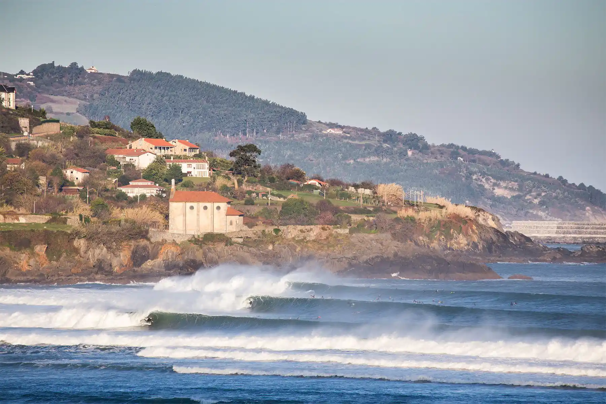
When the bucket is empty and the wave comes, what do you do? You reach into your pocket for a system. That, right there, is the whole difference between the people who fail and the people who make it.
😣 Why people fail
- Running on willpower and motivation alone
- Gritting their teeth and hoping to "be good"
- Keeping sweets and junk in the house, in plain sight
- Shopping hungry, with no list
- No plan for the weak moment, so the weaker version wins
- Doing it alone, with no one to answer to
💪 How you win
- Keep healthy nuts nearby (not the salty, sugary kind) for when hunger hits
- Want something sweet? Greek yogurt with fruit, a little honey and banana. Make that your default
- Get the sweets out of the house. If it is not in front of you, you will not eat it
- Clear the junk out of the fridge and cupboards completely
- Decide your meals in advance, when you are calm and full
- Get an accountability partner. Guillermo and Pilar, do this together and support each other
And at the very end of this guide there is one more powerful system: a 45-day contract you sign, to lock the whole thing in.
"It is not about willpower. It is about the system you have ready when temptation shows up."
Fuerza de voluntad vs. sistemas 🧰
Vuestra carne contra vuestro espíritu. 😇 Hay una frase antigua en la Biblia: «el espíritu está dispuesto, pero la carne es débil.» Da en el clavo. Vuestra carne (el cuerpo) es la reina del drama que lloriquea por el postre, suplica el picoteo de medianoche y lo quiere todo ya. Vuestro espíritu (el vosotros de verdad) es quien decide en quién os queréis convertir. La carne grita, pero el espíritu manda. Toda esta guía es en realidad una sola cosa: poner a vuestro espíritu en forma para que devuelva a la carne a su sitio.
«La fuerza de voluntad es un cubo pequeño de agua. Para la noche suele estar vacío.»
Cada vez que decís que no, vertéis un poco más. Y justo cuando se queda seco, toda la cocina se despierta, y con ella la tentación.
Empieza como un susurro desde la nevera: «Guillermo... Guillermooo...» Luego se suman las galletas desde el armario: «Pilar... Pilaaar...» y enseguida toda la cocina es un gran coro. Pero no es la cocina la que canta. Es vuestra carne, esa misma reina del drama, montando una pataleta por su postre. 😄
Y esos al menos tienen la decencia de quedarse escondidos. Ese cuenco enorme de dulces aparcado justo delante de la tele ni siquiera se molesta en susurrar, se queda ahí a la vista, sonriéndoos toda la tarde. 😄
Por eso importan tanto los sistemas por encima de la fuerza de voluntad.
Los que lo consiguen no son más fuertes que vosotros. Simplemente construyeron sistemas, para que la fuerza de voluntad no tenga que salvar el día.
Dentro de vosotros hay una versión más fuerte y una más débil, y las dos son reales. Cada vez que cumplís vuestra palabra, crece la fuerte. Cada vez que la rompéis, crece la débil. Mi trabajo es asegurarme de que el vosotros fuerte nunca pelee solo. Eso es todo lo que es un sistema: un pequeño truco esperando en el bolsillo, para que la decisión correcta esté medio tomada antes incluso de que aparezca el antojo.
Y aquí está lo que lo cambia todo: un antojo es una ola, no un muro. Sube, llega a su punto más alto y, si no lo alimentáis, rompe y se aleja, normalmente en unos minutos. Como las olas de Mundaka, siempre parece más grande desde la orilla de lo que en realidad es. No tenéis que vencerlo. Solo tenéis que aguantar más que él.
Cuando el cubo está vacío y llega la ola, ¿qué hacéis? Metéis la mano en el bolsillo y sacáis un sistema. Eso, justo ahí, es toda la diferencia entre los que fracasan y los que lo consiguen.
😣 Por qué fracasa la gente
- Tirando solo de fuerza de voluntad y motivación
- Apretando los dientes y esperando «portarse bien»
- Teniendo dulces y porquerías en casa, a la vista
- Comprando con hambre y sin lista
- Sin plan para el momento débil, así que gana la versión más débil
- Haciéndolo solos, sin nadie a quien rendir cuentas
💪 Cómo ganáis vosotros
- Tened a mano frutos secos sanos (no los salados ni azucarados) para cuando ataque el hambre
- ¿Os apetece algo dulce? Yogur griego con fruta, un poco de miel y plátano. Que sea vuestra opción por defecto
- Sacad los dulces de casa. Si no lo tenéis delante, no os lo coméis
- Vaciad por completo de porquerías la nevera y los armarios
- Decidid las comidas con antelación, cuando estéis tranquilos y llenos
- Buscad un compañero de cuentas. Guillermo y Pilar, hacedlo juntos y apoyaos el uno al otro
Y al final del todo de esta guía hay un sistema más, muy potente: un contrato de 45 días que firmáis, para dejarlo todo bien atado.
«No va de fuerza de voluntad. Va del sistema que tenéis listo cuando aparece la tentación.»
It won't be easy. But it is possible.
I am not going to lie to you. This will not always be easy. Some days you will be hungry, some evenings you will want to quit. That is normal, and it is part of it. But it is absolutely possible, and plenty of people who are no stronger than you have done it.
The magic you are looking for is in the thing you are trying to avoid.
The broken hunger timetable
Here is what is probably happening right now. You wake up and before your eyes are even open, your stomach is already shouting "feed me." At work you finish lunch and you are already thinking about dinner. In the evening you are on the sofa with a late snack. You eat late, you go to bed with a full belly, and while your body should be resting it is busy digesting all night. In the morning, no break, and the whole thing starts again. Your hunger is running on a broken timetable. A big part of this plan is simply fixing that timetable, so your body learns to rest, and learns to burn its own fat instead of always begging for the next meal.
No será fácil. Pero es posible.
No os voy a mentir. Esto no siempre será fácil. Habrá días con hambre, y noches en las que querréis tirar la toalla. Es normal, y forma parte del camino. Pero es absolutamente posible, y un montón de gente que no es más fuerte que vosotros ya lo ha conseguido.
La magia que buscáis está justo en aquello que intentáis evitar.
El horario del hambre, estropeado
Esto es lo que seguramente os pasa ahora. Os despertáis y, antes de abrir los ojos, el estómago ya grita «dame de comer». En el trabajo termináis de comer y ya estáis pensando en la cena. Por la noche, en el sofá, con un último picoteo. Coméis tarde, os vais a la cama con la barriga llena, y mientras el cuerpo debería descansar, se pasa toda la noche digiriendo. Por la mañana, sin pausa, y vuelta a empezar. Vuestra hambre funciona con un horario estropeado. Buena parte de este plan es simplemente arreglar ese horario, para que el cuerpo aprenda a descansar y a quemar su propia grasa en vez de mendigar la siguiente comida.
Your Big WHY ❤️
Please do not skip this one. Everything else stands on it.
"Without a strong why, no plan survives a bad evening."
Willpower runs out, but a real reason refuels itself. So get it clear now. Why do you really want to lose weight? What gives you strength? Is it your grandchildren? Your heart? The man you want to see in the mirror? The extra years you want with your family? Whatever it is, find it, because in the weak moments (and everyone has them) this is the thing you reach for.
Reasons that tend to be powerful
- 👨👧 Being strong and mobile enough to play with grandchildren for many years.
- 💪 Less out of breath on the scaffolding, easier knees and back, more energy after work.
- ❤️ Less excess fat means less strain on your heart and blood vessels.
- 😌 Feeling good in your clothes and in your own skin. Confidence counts.
The science, briefly (so the why has muscle)
Excess weight raises the risk of heart disease, type-2 diabetes, and at least 13 types of cancer (World Health Organization). The good news: losing just 5 to 10% of your body weight already brings real improvements in blood pressure, blood sugar, and cholesterol. You do not need a "perfect" weight to win big on health.
"The why is the engine. Everything else is just steering."
Vuestro gran PORQUÉ ❤️
Por favor, no os saltéis esta. Todo lo demás se apoya en ella.
«Sin un porqué fuerte, ningún plan sobrevive a una mala noche.»
La fuerza de voluntad se agota, pero una razón de verdad se recarga sola. Así que tenedlo claro ahora. ¿Por qué queréis adelgazar de verdad? ¿Qué os da fuerza? ¿Vuestros nietos? ¿El corazón? ¿El hombre que queréis ver en el espejo? ¿Los años de más que queréis con vuestra familia? Sea lo que sea, encontradlo, porque en los momentos débiles (y todos los tenemos) es a esto a lo que os agarráis.
Razones que suelen tener mucha fuerza
- 👨👧 Estar fuertes y ágiles para jugar con los nietos durante muchos años.
- 💪 Menos ahogo en el andamio, rodillas y espalda más llevaderas, más energía después del trabajo.
- ❤️ Menos grasa de más significa menos esfuerzo para el corazón y los vasos sanguíneos.
- 😌 Sentirse bien con la ropa y en la propia piel. La confianza cuenta.
La ciencia, en breve (para que el porqué tenga músculo)
El exceso de peso aumenta el riesgo de enfermedad del corazón, diabetes tipo 2 y al menos 13 tipos de cáncer (Organización Mundial de la Salud). La buena noticia: perder solo un 5 a 10 % de vuestro peso ya trae mejoras reales en la tensión, el azúcar en sangre y el colesterol. No hace falta un peso «perfecto» para ganar mucho en salud.
«El porqué es el motor. Todo lo demás es solo el volante.»
Calories In, Calories Out ⚖️
Calories IN is the food and drink you take in. Calories OUT is everything your body burns just living, working and moving. Tip the balance, and over time your weight quietly follows.
Eat more than you burn, and you gain.
Everything else is detail.
It is a solid estimate, not a lab reading. It starts from your body's resting burn (from your weight, height, age and sex, the standard Mifflin-St Jeor formula), times how active your day is, plus any extra walking. The honest part: the scale is the real test. Pick a number, eat to it for 2 to 3 weeks and watch. Losing too fast? Eat a little more. Nothing moving? Trim a little, or add steps. Your body shows you the exact number over time.
Method: Mifflin-St Jeor (1990) plus an activity factor, the same approach dietitians use. About 7,700 kcal of food equals 1 kg of body fat, and roughly 40 kcal per 1,000 steps walked.
Think of your body like a wood stove. The food you eat is the wood you feed in. The fire is your body burning it all day. Feed it a little less than it burns, and it reaches into the woodpile you already carry, your fat, to cover the gap. A small daily gap of about 500 kcal melts roughly half a kilo of fat a week. Steady, and easy to keep. A body doing hard physical work burns a lot, so you do not need to starve, just stay a little under.
🔥 The aha-moment: metabolic flexibility
Your body can run on two fuels: the food you just ate, and the fat you have stored. If you eat constantly, snack after snack all day, your body gets used to fuel from the outside and gets lazy at burning fat. Then when you skip a snack it panics ("where is my fuel?") even though you are carrying plenty as fat. That panic shows up as cravings and feeling weak. The fix is not to panic-eat, it is to eat real meals with protein and be okay with a little normal hunger between them, so your body remembers how to burn its own reserves.
"If you only feed your body from the outside, it never learns to burn the fuel it is already carrying."
Your Path 🛤️
Two paths that both work. The best one is the one you will actually keep.
🫒 Mediterranean
Recommended start. Basically how Pilar already cooks: fish, vegetables, beans, fruit, good olive oil. The most studied diet for heart health and long life.
The one habit that changes the Basque kitchen most: measure the oil. One tablespoon is about 120 calories; a "glug", that famously generous Basque pour, can be 400 or more. Use a spoon or a spray, grill and stew more. Same dishes, hundreds of calories lighter, zero flavor lost.
🍳 Low-carb / High-protein
The "get-in-shape fast" way. More protein, fewer refined carbs (not zero). Protein is the most filling food there is, so the calorie deficit happens almost by itself, and it protects your muscle while you lose fat.
Quick early results (some is water weight) and strong appetite control. Just do not go extreme, and keep some smart carbs around your hard work days for energy.
Which should I pick? (and a word on "carnivore")
Love fish, vegetables and Pilar's cooking? Start Mediterranean. Love meat and eggs and want faster early results? Try low-carb. Many people blend both: a Mediterranean base with extra protein and fewer refined carbs. Carnivore (only meat, no plants) is the extreme end, very restrictive and it cuts out the fiber and plant nutrients that protect your heart and gut, so I do not recommend it as a default. Pick a starting point, try it for 2 to 3 weeks, adjust.
"The best diet is the one you will actually keep."
Vuestro Camino 🛤️
Dos caminos que funcionan. El mejor es el que de verdad vais a mantener.
🫒 Mediterránea
El inicio recomendado. Básicamente como ya cocina Pilar: pescado, verduras, legumbres, fruta, buen aceite de oliva. La dieta más estudiada para el corazón y para vivir muchos años.
El hábito que más cambia la cocina vasca: medir el aceite. Una cucharada son unas 120 calorías; un «chorro», esa famosa generosidad vasca, puede ser 400 o más. Usad una cuchara o un espray, y más a la plancha y al guiso. Los mismos platos, cientos de calorías menos, sin perder nada de sabor.
🍳 Baja en carbohidratos / Alta en proteína
La vía «ponerse en forma rápido». Más proteína, menos carbohidratos refinados (no cero). La proteína es lo que más sacia, así que el déficit casi se hace solo, y protege el músculo mientras perdéis grasa.
Resultados rápidos al principio (parte es agua) y mucho control del apetito. Eso sí, no os vayáis al extremo, y guardad algunos carbohidratos buenos para los días de trabajo duro, por la energía.
¿Cuál elijo? (y una palabra sobre lo «carnívoro»)
¿Os encantan el pescado, las verduras y la cocina de Pilar? Empezad por la mediterránea. ¿Os tira la carne y los huevos y queréis resultados rápidos? Probad la baja en carbohidratos. Mucha gente mezcla las dos: una base mediterránea con más proteína y menos carbohidratos refinados. Lo carnívoro (solo carne, sin plantas) es el extremo, muy restrictivo, y deja fuera la fibra y los nutrientes de las plantas que protegen el corazón y el intestino, así que no lo recomiendo por defecto. Elegid un punto de partida, probadlo 2 o 3 semanas, ajustad.
«La mejor dieta es la que de verdad vais a mantener.»
The 45-Day Plan 🗺️
Three stages of 15 days. You do not do everything at once, you stack one easy win on top of another. Tap a day when you have done your best. 💚
🟢 Stage 1 · Days 1 to 15
Awareness & easy swaps- Do the WHY exercise
- Cut sugary drinks first
- Measure the oil
- Half the plate vegetables
- Kitchen closes after dinner
🟡 Stage 2 · Days 16 to 30
Structure & habits- Pick your path
- Protein at every meal
- Skip white bread and wine on normal days
- Build danger-zone systems
- A walk after dinner
🔵 Stage 3 · Days 31 to 45
Consistency & make it yours- Keep it steady, consistency beats intensity
- Handle a real event well on purpose
- Weigh yourself every 2 or 3 days and adjust
- Plan your "after day 45": which 4 or 5 habits stay forever?
"Anyone can be good for three days. The art is keeping the good grade."
Your 45-Day Contract ✍️
Here is a trick that genuinely works. You make a promise in writing, you put something on the line, and you sign it. That turns a vague wish into a real commitment. I have written it for you, you read it, you adjust it until it feels right, and then you sign it on paper.
Put something on the line
A promise with nothing at stake is easy to break. So add a little weight to it. The rule is simple: make success feel good, and make quitting a little painful. Pick what fits you:
🎁 The reward (if you make it)
- You both put a little money in a jar, and at day 45 you spend it on something you have wanted for ages: a trip, a great meal out, a day away together.
- Or a non-money reward you have been promising yourselves for years.
⚖️ The stake (if you break it)
- Money you would hate to lose, held by Marten, that goes to charity (or to your partner) if you quit.
- Or a food stake: no wine or dessert for the next two weeks. A forfeit you will actually feel.
- Or a chore: whoever breaks it cooks and cleans for a week.
My 45-Day Commitment
I, , on this day , make this promise to myself and to my partner :
- I will be stronger than my cravings. A craving is just a wave, and I let it pass.
- I will not give in to my impulses. An impulse has no power. I am the captain of my ship.
- My systems are stronger than my willpower, because I know my willpower will run dry, and my systems will not.
- I will eat below the calories my body truly needs, most days, without starving myself.
- When the impulse hits, I stay strong, go to my list of habits, and read my why again.
- I will follow the plan and prepare my meals, and keep it simple.
- I will weigh myself every 2 or 3 days and write it down, to see the honest truth.
My simple starting rules:
- No eating after 7 p.m. The kitchen closes.
- Cut the obvious things first: the sweets and the snacks. This alone changes a lot.
- Skip the white bread and the wine on normal days.
- Half my plate vegetables, a palm of protein, water instead of sugary drinks.
I make this commitment for 45 days, because changing a lifetime system is hard and deserves a real promise. I am doing this now, on purpose, before life forces me to.
If I keep it, my reward is:
If I break it, my stake is:
Marten prepares and prints the real one. You read it, adjust it together, and sign it by hand. That signature matters.
Vuestro Contrato de 45 Días ✍️
Aquí va un truco que funciona de verdad. Hacéis una promesa por escrito, ponéis algo en juego, y la firmáis. Eso convierte un deseo vago en un compromiso real. Yo os lo he escrito; vosotros lo leéis, lo ajustáis hasta que os encaje, y luego lo firmáis en papel.
Poned algo en juego
Una promesa sin nada en juego es fácil de romper. Así que dadle algo de peso. La regla es sencilla: haced que ganar siente bien, y que rendirse duela un poco. Elegid lo que os encaje:
🎁 La recompensa (si lo conseguís)
- Los dos metéis un poco de dinero en un bote, y el día 45 lo gastáis en algo que lleváis tiempo queriendo: un viaje, una buena comida fuera, un día juntos.
- O una recompensa sin dinero que os lleváis prometiendo años.
⚖️ La prenda (si lo rompéis)
- Dinero que os dolería perder, guardado por Marten, que va a una ONG (o a vuestra pareja) si lo dejáis.
- O una prenda de comida: sin vino ni postre las próximas dos semanas. Un castigo que de verdad notéis.
- O una tarea: quien lo rompa cocina y limpia una semana.
Mi Compromiso de 45 Días
Yo, , hoy día , hago esta promesa a mí mismo y a mi pareja :
- Seré más fuerte que mis antojos. Un antojo es solo una ola, y dejo que pase.
- No cederé a mis impulsos. Un impulso no tiene poder. Soy el capitán de mi barco.
- Mis sistemas son más fuertes que mi fuerza de voluntad, porque sé que la voluntad se me agotará y los sistemas no.
- Comeré por debajo de las calorías que mi cuerpo necesita de verdad, la mayoría de los días, sin pasar hambre.
- Cuando llegue el impulso, me mantengo fuerte, voy a mi lista de hábitos y releo mi porqué.
- Seguiré el plan y prepararé mis comidas, y lo mantendré sencillo.
- Me pesaré cada 2 o 3 días y lo apuntaré, para ver la verdad sin engaños.
Mis reglas sencillas para empezar:
- Nada de comer después de las 19:00. La cocina cierra.
- Cortar primero lo evidente: los dulces y el picoteo. Solo esto ya cambia mucho.
- Sin pan blanco y sin vino los días normales.
- Medio plato de verduras, una palma de proteína, agua en vez de bebidas azucaradas.
Asumo este compromiso durante 45 días, porque cambiar el sistema de toda una vida es difícil y merece una promesa de verdad. Lo hago ahora, a propósito, antes de que la vida me obligue.
Si lo cumplo, mi recompensa es:
Si lo rompo, mi prenda es:
Marten prepara e imprime el de verdad. Vosotros lo leéis, lo ajustáis juntos y lo firmáis a mano. Esa firma importa.
Recipes 🍳
Simple, filling, Basque and Mediterranean friendly. "Today I feel like..." then tap a filter.
Extra Tips 💡
🧪 The hunger hormone: Ghrelin
Your hunger is not just willpower, it is partly hormones. Ghrelin is the body's "hunger hormone": it rises when your stomach is empty and makes you feel hungry. Here is the key fact: protein lowers ghrelin more than carbs or fat do, and keeps it down longer. At the same time, protein boosts your "I am full" hormones (GLP-1 and PYY). So more protein means less hunger plus more fullness, which means fewer cravings, naturally. That is the machinery behind "lead every meal with protein."
Sources: Blom et al., Am J Clin Nutr 2006; Leidy et al. 2015; Cummings et al., Diabetes 2001.
🥄 Where the calories hide (the mayonnaise shock)
You cannot change what you cannot see. A bowl of homemade mayonnaise or ali-oli can be 100 ml of oil, around 880 hidden calories, sitting there looking completely innocent. You do not have to cut everything. Pick two or three to drop or swap and that alone can be your whole daily deficit, with the same meals and the same pleasure.
- 🥄 Homemade mayonnaise or ali-oli, a bowl: about 800 kcal → yogurt-based, or far less oil
- 🫗 A "glug" of frying oil, 3 spoons: about 360 kcal → measure 1 spoon, or a spray
- 🍰 Whisky cheesecake (tarta de queso): about 400 kcal → skip it, or share one spoon
- 🥤 A can of cola or a sugary drink: about 140 kcal → sparkling water with lemon
💶 Budget your day like money
You have a calorie budget each day, so spend it where it is worth it. Big dinner planned, paella and wine with the family? Keep breakfast and lunch lighter and arrive with room to enjoy it, guilt-free. Some days front-loaded, some back-loaded, and over the week it balances. And start glancing at labels now and then, not to stress, just to see where the calories were quietly hiding.
🛟 Danger zones: eating out, parties, on the go
- Eating out: budget the day, order protein and vegetables first, water alongside any alcohol, and you do not have to clean the plate.
- Parties: eat a small protein snack before you go, pick your treats on purpose, and stand away from the food table.
- On the go: always carry a small pack of nuts, fruit, or a boiled egg. Then the pastry counter can bat its eyes all it likes, you are simply not interested.
- Evening and TV: kitchen closed, water in hand, any treat pre-decided.
🎯 Preparation beats willpower
Willpower is weakest exactly when you need it: tired, stressed, evening, hungry. So do not rely on it. Prepare while calm and full: meals decided ahead, good food in the house, nuts in your pocket, a pre-decided treat. When the craving hits, you just follow the plan you already made.
⏸️ Beat a craving in the moment
- Name it: "This is a craving, not real hunger."
- Drink water and wait 10 minutes. Cravings come in waves and break.
- Do something with your hands: walk, make tea, brush your teeth.
- Still want it? Have a small, pre-decided portion, sitting down. No guilt.
❤️ When motivation dips, get the note out
Do not think your way back with logic, go back to your feeling. Get the note from the fridge, your real reason for starting, and read it. "Why did I actually begin this?" Thirty seconds restarts the engine.
A few more quick wins
- Sleep. Bad sleep raises ghrelin and next-day cravings.
- Protein first on the plate.
- Slow down. Fullness takes about 20 minutes.
- A walk after dinner helps blood sugar and curbs grazing.
- Do not drink your calories: water, coffee, tea.
"It is not willpower, it is preparation. And when motivation dips, get the note out."
The Cheat Sheet 📄
If you forget everything else, keep these pages. The whole guide squeezed down to what you can glance at on a hard day. Print it, stick it on the fridge, and follow it.
The 7 biggest levers 🎯
Not the easiest seven, the ones with the biggest payoff for the effort. Do mostly these and the rest takes care of itself.
- Stop drinking your calories. Cola, juice, sugary coffee, most of the alcohol. The fastest, biggest win there is, and you barely feel it. One can of cola is about a third of a day's sugar, gone in two minutes.
- Protein and vegetables first, every meal. Half the plate vegetables, a palm of protein, then a smaller side of bread, rice, or potato. Full on fewer calories. This is the lever that makes hunger bearable.
- Don't keep the trigger food in the house. You don't beat the biscuits at 10 p.m. on the couch, you beat them on Saturday in the shop. If it isn't there, you won't eat it.
- Close the kitchen after dinner. Last food about 3 hours before bed, then water or tea, brush your teeth, done. The evening couch is where most plans quietly die.
- Move every day. Not the gym, just movement: a walk after dinner, the stairs, parking further away. Steps add up to real calories and they cool down cravings.
- Protect your sleep. One bad night and your hunger hormones turn up the volume the next day. Good sleep is a weight-loss tool, treat it like one.
- Measure your fats. Oil with a spoon or a spray, never a free pour. One tablespoon of olive oil is about 120 kcal. Easy to drown a healthy meal without noticing.
"It is not about willpower. It is about setting things up so you barely need any."
Avoid this, do this instead 🔁
The typical stumbling blocks, and the simple swap for each. Read the left, do the right.
| ❌ Avoid this | ✅ Do this instead |
|---|---|
| Cola, juice, energy drinks | Sparkling water with lemon; coffee or tea, no sugar |
| A free pour of oil into the pan | Measure it: one spoon, or a spray (1 tbsp ≈ 120 kcal) |
| Eating in front of the TV | Eat at the table, on a plate; skip the automatic second helping |
| A mountain of white bread or rice | Half a plate of vegetables first, a smaller side of carbs |
| Shopping hungry with no list | Eat first, shop the edges of the store, stick to the list |
| "Just one" from the big bag | Buy single-serve, and keep it out of the house |
| Snacking all day long | 2 or 3 real meals; let the body burn its own fat between |
| Sausages, bacon, chorizo every day | Fish, eggs, chicken; cured meat as an occasional treat |
| The late-night cupboard hunt | Kitchen closed, water or tea, brush teeth, treat pre-decided |
| A pastry breakfast | Eggs or yogurt, so you stay full until lunch |
| Sitting still all evening | A 10-minute walk after dinner |
| "I blew it, I'll start Monday" | Next meal, back to normal. One slip is not a collapse |
| Weighing daily and panicking | Weigh weekly at the same time, judge by the trend |
| Eating because you're stressed | Run the HALT check first, then walk, breathe, or call someone |
What lands in the basket 🧺
Win the shop and you barely fight at home. A picture is easier to remember than a rule, so here it is: the ones to leave behind, and the ones to load up on.
❌ Leave it on the shelf (or buy rarely, single-serve)
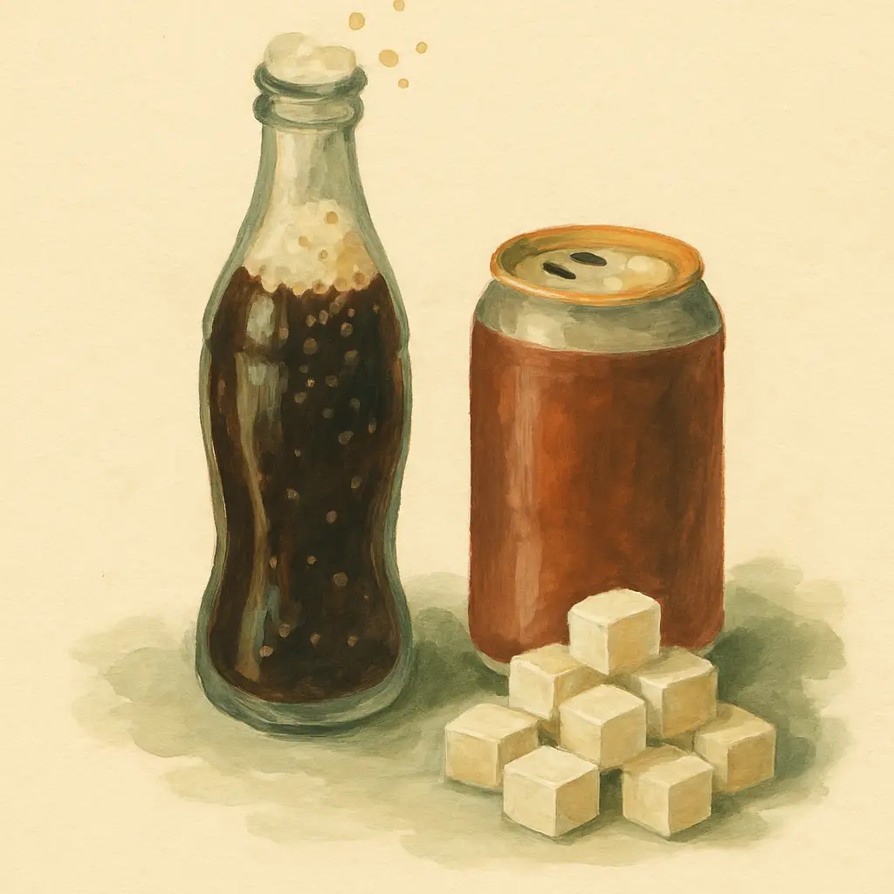
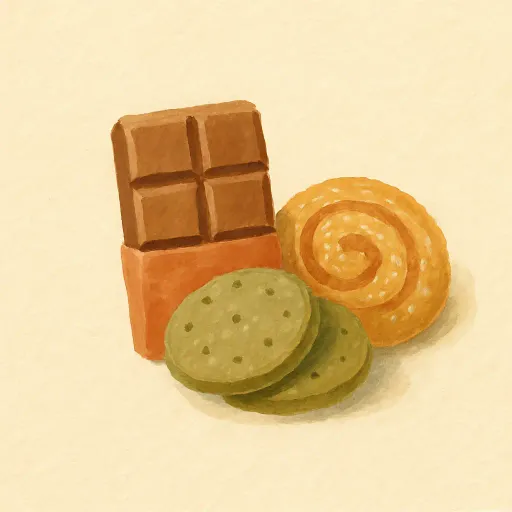
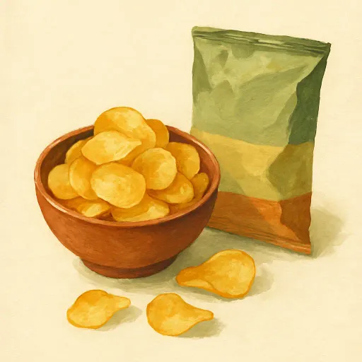
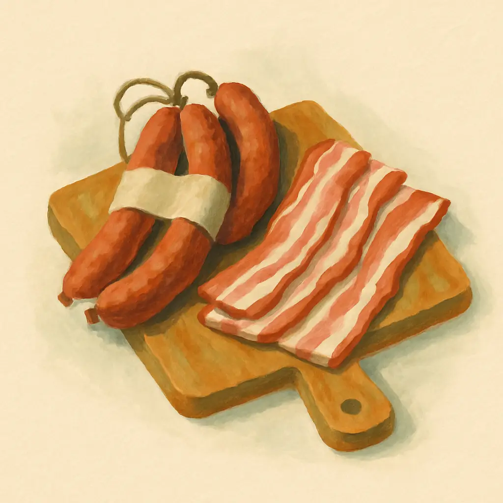
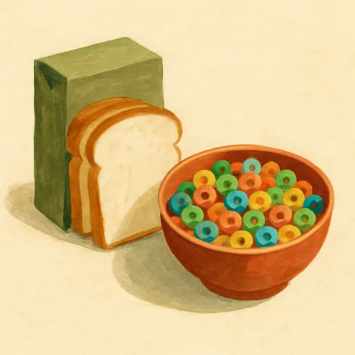
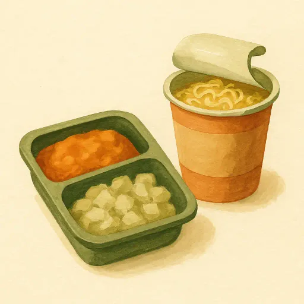
✅ Fill the cart with these
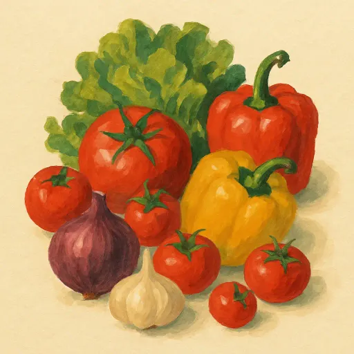
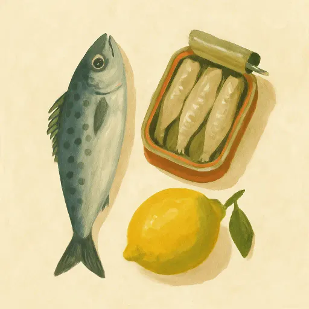
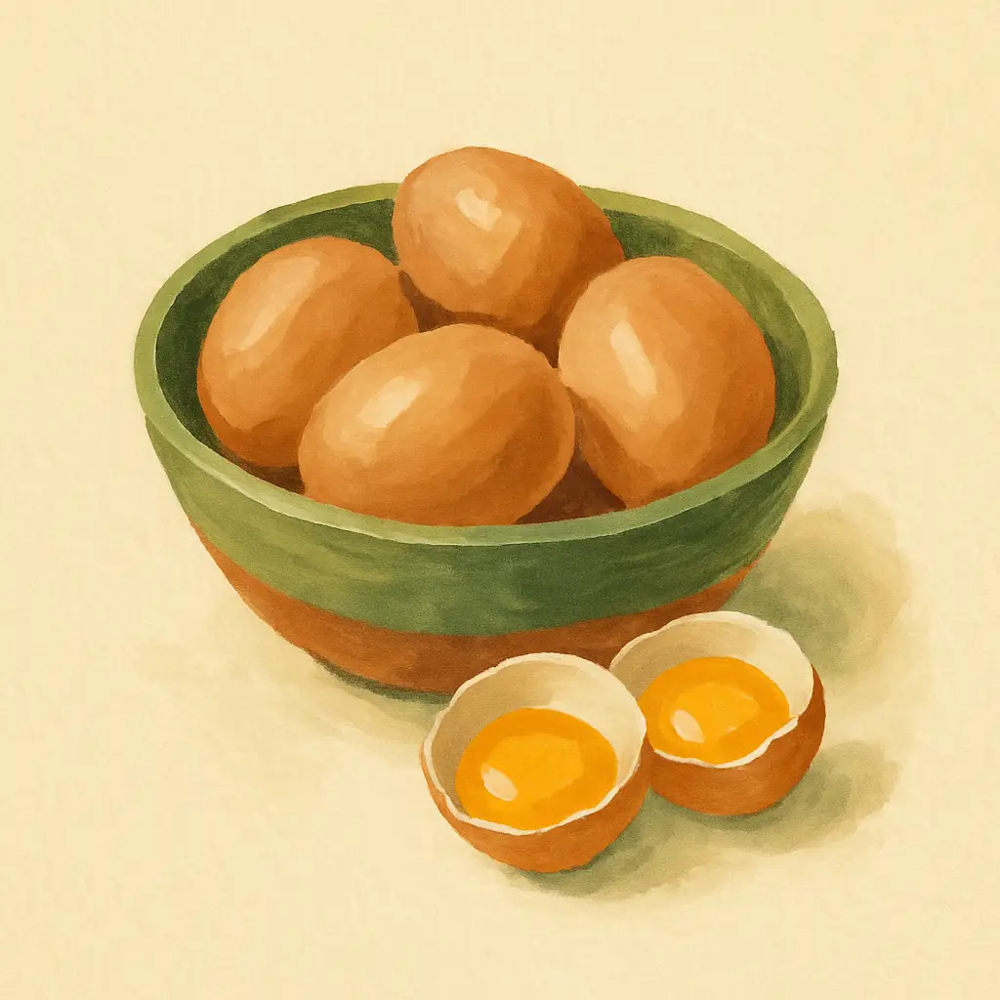
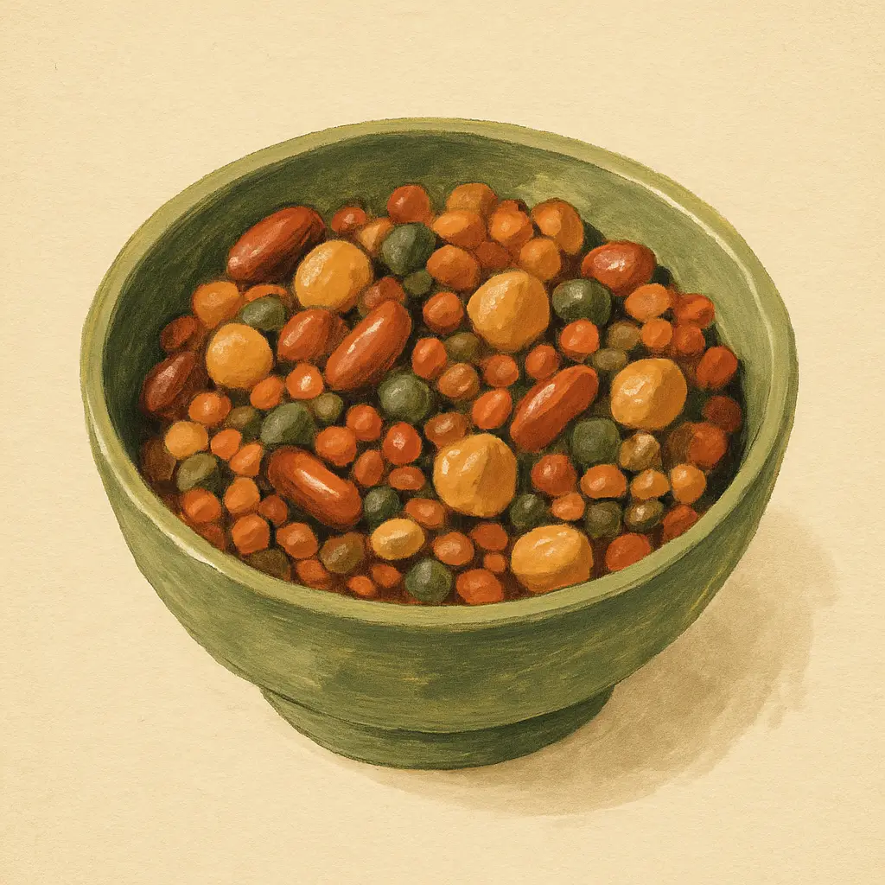
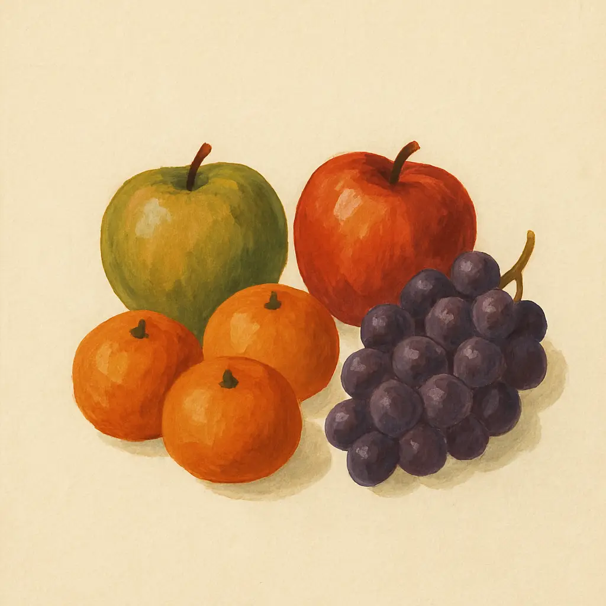
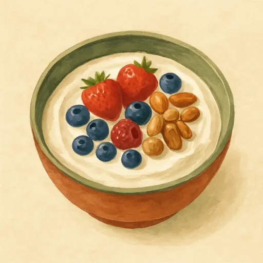
The six that quietly decide it 🔑
The big diet stuff gets all the attention. These six decide whether it actually sticks.
😴 Sleep
Short sleep raises your hunger hormone and your cravings the very next day. Guard it like part of the plan, because it is.
😤 Stress and feelings
A lot of eating is mood, not hunger. Run the HALT check: am I Hungry, Angry, Lonely, or Tired? If it is a feeling, food won't fix it. Walk, breathe, or call someone.
🚶 Move more, all day
You cannot out-train a fork, but daily movement counts: a walk after meals, the stairs, parking further off. More steps than yesterday.
💪 Keep your muscle
Lose fat, not muscle. Enough protein plus using your muscles a little protects your metabolism and keeps you strong as the years go.
⏳ Be patient
The scale does not drop in a straight line. Some weeks it sticks, then it moves. That is not failure, judge by the month, not the morning.
📏 Track it right
Weigh once a week, same morning. Better still, watch how your belt sits and how your clothes fit. That is the real progress.
"Keep these pages on the fridge. On a hard day you don't need motivation, you just need to glance at the plan and follow it."
Your Power Page 🔥
When the evening is hard, when the craving is loud, when you forgot why you started, come back here. Read it slowly. Read it out loud if you can. These are yours now.
The one that matters most 🔁
One bad hour does not mean the next hour has to be bad.
A bad morning does not mean the whole day has to be bad.
A bad day does not mean the next day has to be bad.
A bad week does not mean the next week has to be bad.
The slip is not what beats you. Giving up after it is. It is not how often you fall. It is how often you get back up. The people who make it are not stronger than you, and it is not pure willpower, it is their systems, and they got up one more time than they went down. Everyone falls. Everyone. Maybe the sweets won seven nights, so they got up and fought back on the eighth.
So when you slip, do not be hard on yourself. The old voice will say: "I tried again and I failed. I am just not made for this, I cannot do it." Do not buy it. Just say: "I am only practicing," and start again. Next meal, next morning, next day. Getting up, again and again, is the muscle. Every time, it grows stronger.
And the deepest part: if you want this with your whole heart, you will find your way. The food rules matter, of course, and calories in and calories out is real. But the main thing was never the diet. It is your mindset.
So do not chase miracles, chase consistency. Expect the slow, steady climb instead of magic, and one day you look up and the change is not a diet you are surviving, it is simply who you are now.
For the fighter in you 💪
Hard, no-excuses fuel. Read them like you mean every word.
For the loving heart in you 💗
Softer fuel. Just as strong.
Remember these truths 💭
- It is not how often I fall. It is how often I get back up.
- I am not failing. I am practicing, and I practice again tomorrow.
- I do not chase miracles. I chase consistency, and consistency rebuilds me.
- It is not about willpower. It is about the systems I set up before the weak moment.
- Will I be weaker than my cravings, or stronger than my impulses? Today, stronger.
- A craving feels like hunger, but it is just a wave. Waves always break.
- One exit off the highway does not mean I crash the car. Next meal, back on the road.
- Discipline is not punishment. It is the freedom to become who I want to be.
"You are stronger than your impulses. Today, prove it to yourself one more time."